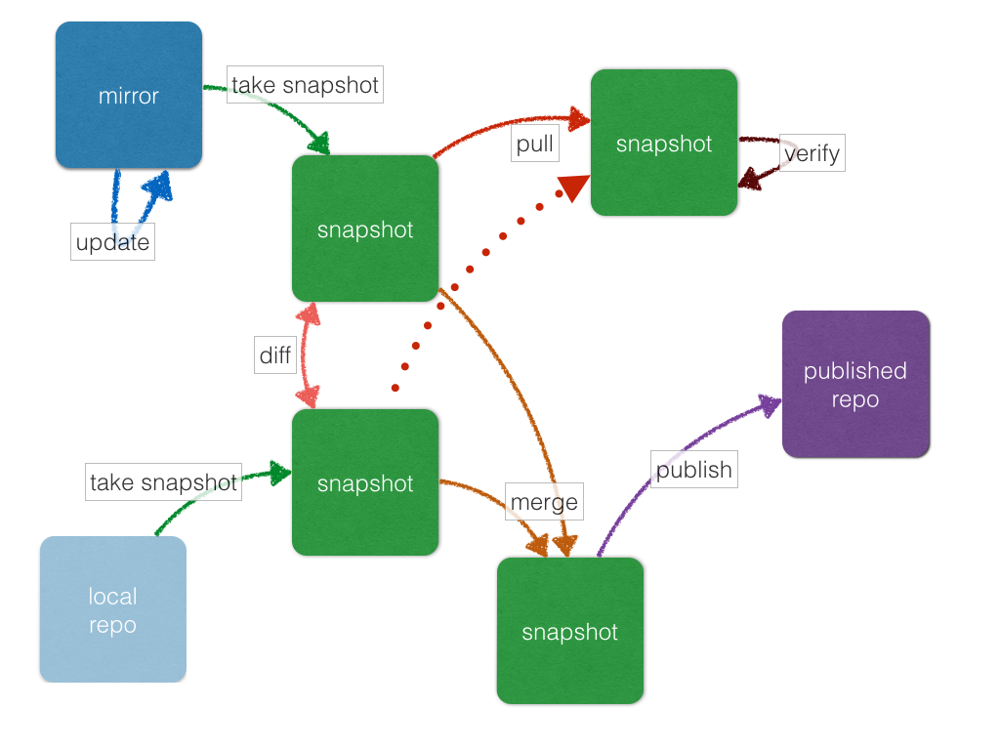

aptly
aptly is a swiss army knife for Debian repository management: it allows to mirror remote repositories, manage local package repositories, take snapshots, pull new versions of packages along with dependencies, publish snapshots as Debian repositories.
aptly is free open-source software licensed under MIT license.
Difference between snapshots
aptly snapshot diff matches package versions in snapshots
Pulling packages
Pull from snapshot to selectively upgrade packages
Mirroring remote repos
Download packages from remote mirror to take stable snapshot

Managing local repos
Create, import and move packages in local package repositories
Serving published repositories
Quickly serve published snapshots over HTTP

Visualize dependencies
Render relationships between mirrors, repos, snapshots and published repositories
Features means planned features
Mirror repository
Take and update mirrors of any Debian/Ubuntu remote repository.
Take snapshot
At any point in time, take snapshot of the mirror to fix current set of packages.
Merge snapshots
Merge two or more snapshots into one snapshot: e.g. merge wheezy and wheezy-updates.
Publish your packages
Manage your own repositories of packages, merge them with offical and publish the result.
Mirror repositories as-is
Mirror official Debian repositories (as snapshots) without resigning by your own key.
Publish snapshot
Any snapshot could be published back as repository (only HTTP server is required).
Upgrade package versions
New package version available in backports? Pull only single package with dependencies from backports into snapshot of stable repository.
Filter repository
Remove packages that are not required, controlling dependencies between packages.
Package search
Search for specific packages, their inclusion into snapshots, etc.
Support for yum repositories
Manage packages for CentOS, RHEL, Fedora.
Examples
Mirror Debian repository distribution squeeze only for architectures i386,
amd64 and publish the result:
Create mirror:
$ aptly -architectures="amd64,i386" mirror create debian-main http://ftp.ru.debian.org/debian/ squeeze main 2013/12/28 19:44:45 Downloading http://ftp.ru.debian.org/debian/dists/squeeze/Release... ... Mirror [debian-main]: http://ftp.ru.debian.org/debian/ squeeze successfully added. You can run 'aptly mirror update debian-main' to download repository contents.
Download mirror contents:
$ aptly mirror update debian-main 2014/01/15 16:50:50 Downloading http://ftp.ru.debian.org/debian/dists/squeeze/Release... Downloading & parsing release files... 2014/01/15 16:50:50 Downloading http://ftp.ru.debian.org/debian/dists/squeeze/main/binary-amd64/Packages.bz2... Saving packages to database... Building download queue... Download queue: 27960 items, 30.68 GiB size
Take snapshot:
$ aptly snapshot create debian-3112 from mirror debian-main Snapshot debian-3112 successfully created. You can run 'aptly publish snapshot debian-3112' to publish snapshot as Debian repository.
Publish snapshot (requires generated GPG key):
$ aptly publish snapshot debian-3112 ... Snapshot debian-3112 has been successfully published. Please setup your webserver to serve directory '/home/example/.aptly/public' with autoindexing. Now you can add following line to apt sources: deb http://your-server/ squeeze main Don't forget to add your GPG key to apt with apt-key.
Set up webserver (e.g. nginx):
server {
root /home/example/.aptly/public;
server_name mirror.local;
location / {
autoindex on;
}
}
Add new repository to apt's sources:
deb http://mirror.local/ squeeze main
Alternatively, you can serve published repositories with aptly itself:
$ aptly serve Serving published repositories, recommended apt sources list: # ./squeeze (main) [amd64, i386] publishes [debian-3112]: Snapshot from mirror [debian-main]: http://ftp.ru.debian.org/debian/ squeeze deb http://localhost:8080/ squeeze main Starting web server at: :8080 (press Ctrl+C to quit)...
Run apt-get to fetch repository metadata:
$ apt-get update
Pulling new version of nginx from backports:
Create backports mirror, download it
and take snapshot:
$ aptly -architectures="amd64,i386" mirror create backports http://mirror.yandex.ru/backports.org/ squeeze-backports ... $ aptly mirror update backports ... $ aptly snapshot create back from mirror backports ...
Pull new version of nginx from backports to main Debian snapshot and save result as snap-deb-w-nginx.
$ aptly snapshot pull debian-3112 back snap-deb-w-nginx nginx Dependencies would be pulled into snapshot: [debian-3112]: Snapshot from mirror [debian-main]: http://ftp.ru.debian.org/debian/ squeeze from snapshot: [back]: Snapshot from mirror [backports]: http://mirror.yandex.ru/backports.org/ squeeze-backports and result would be saved as new snapshot snap-deb-w-nginx. Loading packages (49476)... Building indexes... [-] nginx-0.7.67-3+squeeze3_i386 removed [+] nginx-1.2.1-2.2~bpo60+2_all added [+] nginx-full-1.2.1-2.2~bpo60+2_i386 added [+] nginx-light-1.2.1-2.2~bpo60+2_i386 added [+] nginx-common-1.2.1-2.2~bpo60+2_all added [-] nginx-1.2.1-2.2~bpo60+2_all removed [-] nginx-0.7.67-3+squeeze3_amd64 removed [+] nginx-1.2.1-2.2~bpo60+2_all added [+] nginx-full-1.2.1-2.2~bpo60+2_amd64 added [+] nginx-light-1.2.1-2.2~bpo60+2_amd64 added Snapshot snap-deb-w-nginx successfully created. You can run 'aptly publish snapshot snap-deb-w-nginx' to publish snapshot as Debian repository.
Snapshot snap-deb-w-nginx can be published as a separate repository.
Download
Currently released aptly version is 0.6 (what's new?).
Roadmap:
- 0.7 (end of June): searching, S3 publishing
- 0.8 (end of July): mirroring as is, yum repositories support
For Debian/Ubuntu aptly could be installed from by adding new repository
to /etc/apt/sources.list:
deb http://repo.aptly.info/ squeeze main
And importing key that is used to sign the release:
$ gpg --keyserver keys.gnupg.net --recv-keys 2A194991 $ gpg -a --export 2A194991 | sudo apt-key add -
After that you can install aptly as any other software package:
$ apt-get update $ apt-get install aptly
Don't worry about squeeze part in repo name: aptly package should work on Debian squeeze+, Ubuntu 10.0+. Package
contains aptly binary, man page and bash completion.
Binary executables (depends almost only on libc) for Debian, CentOS, MacOS X & FreeBSD are available for download from Bintray. Linux executables should run on almost any recent Linux distribution.


Just copy binary to your machine, make it executable and run it:
$ chmod +x aptly $ ./aptly
Bash completion for aptly is available as separate repo.
If you have Go environment set up (go 1.1+ required), you can build aptly from source by cloning it and building with gom:
$ go get -u github.com/mattn/gom $ mkdir -p $GOPATH/src/github.com/smira/aptly $ git clone https://github.com/smira/aptly $GOPATH/src/github.com/smira/aptly $ cd $GOPATH/src/github.com/smira/aptly $ gom -production install $ gom build -o $GOPATH/bin/aptly $ aptly
Support
If you have trouble using aptly, you can find community support from aptly-discuss mailing list or file an issue on GitHub.
Please following me (@smira) to get updates about aptly.
Usage
aptly goal is to establish repeatiblity and controlled changes in package environment. aptly allows to fix set of packages in repository, so that package installation and upgrade becomes deterministic. At the same time aptly allows to perform controlled, fine-grained changes in repository contents to transition your package environment to new version.
Core Concepts
- mirror
- mirror of remote repository, consists of metadata, list of packages and package files
- local repo
- local package repository, consists of metadata, packages and files, packages could be easily added and removed
- snapshot
- immutable list of packages, basic block to implement repeatability and controlled changes
- published repository
- published representation of snapshot or local repository, ready to be consumed by apt tools
The schema of aptly's commands and transitions between entities:

We can start with creating mirrors of remote repositories. Also
you can create local package repositories and import there packages
as files. Local repos could be modified by copying and moving
packages between local repositories and importing them from mirrors.
Snapshot could be created from remote repository
(official Debain repositories, backports, 3rd party repos, etc.) or your local repository (custom built
packages, your own software). Snapshots
can be used to produce new snapshots by pulling packages with dependencies between snapshots
and by merging snapshots. Any snapshot can be
published to location
(distribution name, prefix) and consumed by apt tools on your Debian systems. Local repositories
could be published directly bypassing snapshot step.
Commands
Aptly supports commands in three basic categories:
-
mirror: manage, update mirrors of remote repositories -
repo: manage local package repositories, add, remove, move, copy packages -
snapshot: create, merge, manage snapshots -
publish: publish snapshot or local repository -
serve: quickly export published repositories via HTTP
Configuration
aptly looks for configuration file in /etc/aptly.conf and
~/.aptly.conf, if no config file found, new one is created. If -config= flag is
specified, aptly would use config file at specified location. Also aptly
needs root directory for database, package and published repository
storage. If not specified, directory defaults to ~/.aptly, it will be
created if missing.
Configuration file is stored in JSON format (default values shown below):
{
"rootDir": "$HOME/.aptly",
"downloadConcurrency": 4,
"downloadSpeedLimit": 0,
"architectures": [],
"dependencyFollowSuggests": false,
"dependencyFollowRecommends": false,
"dependencyFollowAllVariants": false,
"dependencyFollowSource": false,
"gpgDisableSign": false,
"gpgDisableVerify": false,
"downloadSourcePackages": false,
"ppaDistributorID": "ubuntu",
"ppaCodename": ""
}
Options:
-
rootDiris root of directory storage to store database (rootDir/db), downloaded packages (rootDir/pool) and published repositories (rootDir/public) -
downloadConcurrencyis a number of parallel download threads to use when downloading packages -
downloadSpeedLimitis a limit on download bandwidth used by aptly in kbytes per second, 0 means unlimited -
architecturesis a list of architectures to process; if left empty defaults to all available architectures; could be overridden with option-architectures -
dependencyFollowSuggests: follow contents ofSuggests:field when processing dependencies for the package -
dependencyFollowRecommends: follow contents ofRecommends:field when processing dependencies for the package -
dependencyFollowAllVariants: when dependency looks likepackage-a | package-b, follow both variants always -
dependencyFollowSource: follow dependency from binary package to source package -
gpgDisableSign: don't sign published repositories withgpg, also can be disabled on per-repo basis using-skip-signingflag when publishing -
gpgDisableVerify: don't verify remote mirrors withgpg, also can be disabled on per-mirror basis using-ignore-signaturesflag when creating and updating mirrors -
downloadSourcePackages: if enabled, all mirrors created would have flag set to download source packages; this setting could be controlled on per-mirror basis with-with-sourcesflag ppaDistributorID&ppaCodenamespecifies paramaters for short PPA url expansion, if left blank they default to output oflsb_releasecommand
rootDir contains all the downloaded packages from remote mirrors,
so it should have enough space. For example. mirror of Debian wheezy (amd64 and i386) requires 70 GiB of disk space.
aptly would use HTTP proxy configured in HTTP_PROXY environment variable automatically.
Global Flags
There are several flags that should be specfied right before command name:
$ aptly --option1 command ...
These flags are:
-
-architectures="": list of architectures to consider during (comma-separated), default to all available -
-config="": location of configuration file (default locations are/etc/aptly.conf,~/.aptly.conf) -
-dep-follow-all-variants=false: when processing dependencies, follow a & b if depdency is 'a|b' -
-dep-follow-recommends=false: when processing dependencies, follow Recommends -
-dep-follow-source=false: when processing dependencies, follow from binary package to source package -
-dep-follow-suggests=false: when processing dependencies, follow Suggests
Global flags override configuration parameters with similar names.
Package Spec
Some commands accept package specs to identify list of packages to process. Package spec is a list of following search conditions:
- direct package reference: reference to exaclty one package. Format is identical to the way
aptly lists packages in
showcommands with-with-packagesflag:name_version_arch, e.g.:libmysqlclient18_5.5.35-rel33.0-611.squeeze_amd64 - dependency condition: syntax follows Debian dependency specification:
package_namefollowed by optional version specification and architecture limit.
Examples:-
mysql-client: matches packagemysql-clientof any version and architecture (includingsource) -
mysql-client (>= 3.6): matches packagemysql-clientwith version greater or equal to3.6. Valid operators for version are:>=,<=,=,>>(strictly greater),<<(strictly less). -
mysql-client {i386}: matches packagemysql-clienton architecturei386, architectureallmatches all architectures but source. -
mysql-client (>= 3.6) {i386}: version and architecture conditions combined.
aptly repo import percona stable 'mysql-client (>= 3.6)'. -
On duplicate packages
In ideal world, tuple (architecture, name, version) should identify unique package.
That holds true (well, almost true) with Debian-based distributions. If two packages with the same
architecture, name and version are coming from different sources, they should be identical.
Debian documentation on repository format explicitly forbids duplicate packages with different content in one repository or in set of repositories for one distribution:
A repository must not include different packages (different content) with the same package name, version, and architecture. When a repository is meant to be used as a supplement to another repository this should hold for the joint main+supplement repository as well.
aptly deduplicates packages with identical (architecture, name, version) tuple and contents into
one single package record and treats them as single package. But if two packages share architecture, name and version,
but have different content, aptly would treat them as different packages. Such packages should never be placed
into one list in aptly (into one local repo, snapshot, mirror, etc.) When such thing happens, aptly would
complain about conflict in packages. Usually such duplicate packages with different content represent some
software packaged for different Debian distribution, so they should never be in the same list.
Integrations
With configuration management systems:
- Chef cookbook by Aaron Baer (Heavy Water Operations, LLC)
- Puppet module by Government Digital Services
Command mirror
Mirror subcommands manage mirrors of remote Debian repositories.
Command aptly mirror create
Creates mirror of remote repository, aptly supports both regular and flat Debian repositories exported via HTTP. aptly would try download Release file from remote repository and verify its signature.
Usage:
$ aptly mirror create <name> <archive url> <distribution> [<component1> ...]
For Launchpad PPAs:
$ aptly mirror create <name> <ppa:user/project>
Params are:
-
nameis a name that would be used in aptly to reference this mirror -
archive urlis a root of archive, e.g. http://ftp.ru.debian.org/debian/ -
distributionis a distribution name, e.g.squeeze, for flat repositories use./instead of distribution name -
component1is an optional list of components to download, if not specified aptly would fetch all components, e.g.main
Flags:
-
-ignore-signatures=false: disable verification of Release file signatures -
-keyring=trustedkeys.gpg: gpg keyring to use when verifying Release file (could be specified multiple times) -
-with-sources=false: download source packages in addition to binary packages (could be enabled by default with config optiondownloadSourcePackages)
By default aptly would download packages for all available architectures.
If architectures are limited (with config architectures or option
-architectures), only packages for those architectures are downloaded
If PPA url is specified, aptly would expand it to HTTP url using configuration options ppaDistributorID &
ppaCodename. If you're running aptly on Ubuntu, defaults should work (aptly would figure out codename using
lsb_release command).
aptly would try to verify signature of Release files using GnuPG. By default, keyring ~/.gnupg/trustedkeys.gpg
would be used. If you would like to use different keyring(s), specify them using -keyring flag. aptly would
advise gpg commands to import keys into trusted keys keyring in order to successfully verify repository signature.
If aptly is running on Debian/Ubuntu machine, it would be good to import archive signing keys shipped with the operating system:
$ gpg --keyring /usr/share/keyrings/debian-archive-keyring.gpg --export | gpg --no-default-keyring --keyring trustedkeys.gpg --import
If you're running Ubuntu, use /usr/share/keyrings/ubuntu-archive-keyring.gpg
If GnuPG is complaining that required key to verify signature is missing, it would report key ID, e.g. 46925553. Keys
could be downloaded from public keyserver and imported into trusted keyring using command:
$ gpg --no-default-keyring --keyring trustedkeys.gpg --keyserver keys.gnupg.net --recv-keys 46925553
Replace 46925553 with the key ID GnuPG is complaining about.
If you're mirroring flat repository, sometimes repository key is located near release files, so you can download it and import into your trusted keychain:
$ wget -O - http://some.repo/repository/Release.key | gpg --no-default-keyring --keyring trustedkeys.gpg --import
You can learn about signed Debian repositories in Debian wiki. If you would like to disable
signature checks, you can use flag -ignore-signatures or configuration setting gpgDisableVerify.
Example:
$ aptly -architectures="amd64" mirror create debian-main http://ftp.ru.debian.org/debian/ squeeze main 2013/12/28 19:44:45 Downloading http://ftp.ru.debian.org/debian/dists/squeeze/Release... ... Mirror [debian-main]: http://ftp.ru.debian.org/debian/ squeeze successfully added. You can run 'aptly mirror update debian-main' to download repository contents.
Command aptly mirror update
Updates remote mirror (downloads package files and meta information). When mirror is created, this command should be run for the first time to fetch mirror contents. This command could be run many times to get updated repository contents. If interrupted, command could be restarted safely.
Usage:
$ aptly mirror update <name>
Params are:
-
nameis a mirror name (given when mirror was created)
All packages would be stored under aptly's root dir (see section on Configuration).
Flags:
-
-download-limit=0: limit download speed (kbytes/sec) -
-ignore-checksums=false: ignore checksum mismatches for downloaded items (packages file, metadata) -
-ignore-signatures=false: disable verification of Release file signatures -
-keyring=trustedkeys.gpggpg keyring to use when verifying Release file (could be specified multiple times)
While updating mirror, aptly would verify signature of Release file using GnuPG. Please read information about signature verification in aptly mirror create command description.
Example:
$ aptly mirror update debian-main 2013/12/29 18:32:34 Downloading http://ftp.ru.debian.org/debian/dists/squeeze/Release... 2013/12/29 18:32:37 Downloading http://ftp.ru.debian.org/debian/dists/squeeze/main/binary-amd64/Packages.bz2... 2013/12/29 18:37:19 Downloading http://ftp.ru.debian.org/debian/pool/main/libg/libgwenhywfar/libgwenhywfar47-dev_3.11.3-1_amd64.deb... ....
Command aptly mirror list
Shows list of registered repository mirrors.
Usage:
$ aptly mirror list
Flags:
-
-raw=false: display list in machine-readable format
Examples:
$ aptly mirror list List of mirrors: * [backports]: http://mirror.yandex.ru/backports.org/ squeeze-backports * [debian-main]: http://ftp.ru.debian.org/debian/ squeeze To get more information about repository, run `aptly mirror show <name>`.
$ aptly mirror list -raw backports debian-main
Command aptly mirror show
Shows detailed information about mirror.
Usage:
$ aptly mirror show <name>
Params are:
-
nameis a mirror name (given when mirror was created)
Flags:
-
-with-packages=false: show detailed list of packages and versions stored in the mirror
Example:
$ aptly mirror show backports2 Name: backports2 Archive Root URL: http://mirror.yandex.ru/backports.org/ Distribution: squeeze-backports Components: main, contrib, non-free Architectures: i386, amd64 Last update: 2013-12-27 19:30:19 MSK Number of packages: 3898 Information from release file: ...
In detailed information basic information about mirror is displayed: filters by component & architecture, timestamp of last successful repository fetch and number of packages.
Command aptly mirror drop
Drop deletes information about remote repository mirror. Package data is not deleted
(it could be still used by other mirrors or snapshots). If mirror is used as source to create a snapshot,
aptly would refuse to delete such mirror, use flag -force to override.
Usage:
$ aptly mirror drop <name>
Params:
-
nameis mirror name which has been given during mirror creation
Flags:
-
-force=false: drop mirror even if it used as source of some snapshot
aptly db cleanup command.Example:
$ aptly mirror drop -force wheezy-main Mirror `wheezy-main` has been removed.
Command repo
Repo subcommands manage local package repositories.
Command aptly repo create
Create local package repository. Repository would be empty when created, packages could be added from files, copied or moved from another local repository or imported from the mirror.
Usage:
$ aptly repo create <name>
Params are:
-
nameis a name that would be used in aptly to reference this repository
Flags:
-
-comment="": any text that would be used to described local repository -
-component="main": default component when publishing -
-distribution="": default distribution when publishing
Default distribution and component would be taken as defaults when publishing repository either directly or via snapshots.
Example:
$ aptly repo create -comment="Nightly builds" testing Local repo [stable] successfully added. You can run 'aptly repo add stable ...' to add packages to repository.
Command aptly repo add
Command adds packages to local repository from .deb (binary packages) and
.dsc (source packages) files. When importing from directory aptly would do
recursive scan looking for all files matching *.deb or *.dsc
patterns. Every file discovered would be analyzed to extract metadata, package would be
created and added to database. Files would be imported to internal package pool. For source packages,
all required files are added as well automatically. Extra files for source package should be
in the same directory as *.dsc file.
Usage:
$ aptly repo add <name> <package file>|<directory> ...
Params are:
-
nameis local repository name
Flags:
-
-remove-files=false: remove files that have been imported successfully into repository
Local repositories work best for distribution of in-house software or for custom-built upstream packages.
Command aptly repo add allows to add source packages and built binary package to local repository.
Local repository could be snapshotted, possibly mixed with snapshots of official repositories and published
for cunsumption.
aptly won't complain if package is added to the repo which is complete duplicate. However it is forbidden to have two packages with identical triples (architecture, name, version) that have different metadata or files. All files added to package pool would be deduplicated, as it happens with files coming from mirrors, so exactly one copy of each file would be stored in aptly pool.
Flag -remove-files allows to implement concept incoming/ directory where packages
are removed as soon as they're imported into database.
Example:
$ aptly repo add testing files/libboost-program-options-dev_1.49.0.1_i386.deb Loading packages... [+] libboost-program-options-dev_1.49.0.1_i386 added
Command aptly repo import
Commands import copies packages matching package spec from mirror src-name
to local repo dst-repo. If dependency following is enabled, aptly would try to copy
missing dependencies from src-mirror as well.
Usage:
$ aptly repo import <src-mirror> <dst-repo> <package-spec> ...
Params are:
-
src-mirrorpackages would be searched in this mirror -
dst-repopackages would be copied to this local repository -
package-speclist of package search conditions
Flags:
-
-dry-run=false: don't import, just show what would be imported -
-with-deps=false: follow dependencies when processing package-spec
When copying with dependencies, global dependency options are used. For example, to copy source packages, use
-dep-follow-source. If aptly won't be able to guess list of architectures from contents of local repository
dst-repo, architectures should be specified with -architectures flag.
Example:
$ aptly repo import percona testing percona-server-client-5.5 Loading packages... [o] percona-server-client-5.5_5.5.35-rel33.0-611.squeeze_i386 imported [o] percona-server-client-5.5_5.5.35-rel33.0-611.squeeze_amd64 imported
Command aptly repo show
Commands show displays information about local repository, possibly listing all packages in the repository.
Usage:
$ aptly repo show <name>
Params are:
-
namelocal repository name
Flags:
-
-with-packages=false: show detailed list of packages and versions stored in the mirror
Example:
$ aptly repo show -with-packages stable Name: stable Comment: Stable packages for project Foo Default Distribution: wheezy Default Component: main Number of packages: 10 Packages: libmysqlclient18_5.5.35-rel33.0-611.squeeze_amd64 percona-server-client-5.5_5.5.35-rel33.0-611.squeeze_amd64 percona-server-common-5.5_5.5.35-rel33.0-611.squeeze_amd64 percona-server-server_5.5.35-rel33.0-611.squeeze_amd64 percona-server-server-5.5_5.5.35-rel33.0-611.squeeze_amd64 libmysqlclient18_5.5.35-rel33.0-611.squeeze_i386 percona-server-client-5.5_5.5.35-rel33.0-611.squeeze_i386 percona-server-common-5.5_5.5.35-rel33.0-611.squeeze_i386 percona-server-server_5.5.35-rel33.0-611.squeeze_i386 percona-server-server-5.5_5.5.35-rel33.0-611.squeeze_i386
Command aptly repo list
Commands list shows list of all local package repositories.
Usage:
$ aptly repo list
Flags:
-
-raw=false: display list in machine-readable format
Examples:
$ aptly repo list List of local repos: * [stable]: Stable packages for project Foo (packages: 10) * [testing] (packages: 1) To get more information about local repository, run `aptly repo show <name>`.
$ aptly repo list -raw stable testing
Command aptly repo copy
Commands copy copies packages matching package spec from local repo src-name
to local repo dst-name. If dependency following is enabled, aptly would try to copy
missing dependencies from src-name as well.
Usage:
$ aptly repo copy <src-name> <dst-name> <package-spec> ...
Params are:
-
src-namepackages would be searched in this local repository -
dst-namepackages would be copied to this local repository -
package-speclist of package search conditions
Flags:
-
-dry-run=false: don't copy, just show what would be copied -
-with-deps=false: follow dependencies when processing package-spec
When copying with dependencies, global dependency options are used. For example, to copy source packages, use
-dep-follow-source. If aptly won't be able to guess list of architectures from contents of local repository
dst-name, architectures should be specified with -architectures flag.
Example:
$ aptly repo copy stable testing percona-server-client-5.5 Loading packages... [o] percona-server-client-5.5_5.5.35-rel33.0-611.squeeze_i386 copied [o] percona-server-client-5.5_5.5.35-rel33.0-611.squeeze_amd64 copied
Command aptly repo move
Commands move moves packages matching package spec from local repo src-repo
to local repo dst-name. If dependency following is enabled, aptly would try to move
dependencies from src-name as well.
Usage:
$ aptly repo move <src-name> <dst-name> <package-spec> ...
Params are:
-
src-namepackages would be searched in this local repository -
dst-namepackages would be moved to this local repository -
package-speclist of package search conditions
Flags:
-
-dry-run=false: don't move, just show what would be moved -
-with-deps=false: follow dependencies when processing package-spec
When moving with dependencies, global dependency options are used. For example, to move source packages, use
-dep-follow-source. If aptly won't be able to guess list of architectures from contents of local repository
dst-name, architectures should be specified with -architectures flag.
Example:
$ aptly repo move stable testing percona-server-client-5.5 Loading packages... [o] percona-server-client-5.5_5.5.35-rel33.0-611.squeeze_i386 moved [o] percona-server-client-5.5_5.5.35-rel33.0-611.squeeze_amd64 moved
Command aptly repo remove
Commands remove deletes packages matching package spec from local repo name.
Usage:
$ aptly repo remove <name> <package-spec> ...
Params are:
-
namepackages would be removed in this local repository -
package-speclist of package search conditions
Flags:
-
-dry-run=false: don't remove, just show what would be removed
When packages are removed from local repository, only references to those packages are removed. If packages are part of any snapshot, this action won't remove them from snapshot. If there are no references to the packages, package files and metadata could be cleaned up by running command aptly db cleanup.
Example:
$ aptly repo remove stable percona-server-client-5.5 Loading packages... [-] percona-server-client-5.5_5.5.35-rel33.0-611.squeeze_i386 removed [-] percona-server-client-5.5_5.5.35-rel33.0-611.squeeze_amd64 removed
Command aptly repo edit
Command edit allows to change metadata of local repository: comment, default distribution and component.
Usage:
$ aptly repo edit <name>
Params are:
-
nameis a local repository name
Flags:
-
-comment="": any text that would be used to described local repository -
-component="": default component when publishing -
-distribution="": default distribution when publishing
Default distribution and component would be taken as defaults when publishing repository either directly or via snapshots.
Example:
$ aptly repo edit -comment="Nightly builds" -distribution=wheezy testing Local repo [testing]: Nightly builds successfully updated.
Command aptly repo drop
Drop deletes information about local package repository. Package data is not deleted
(it could be still used by other mirrors or snapshots). If snapshot has been created from local repository,
aptly would refuse to delete such repository, use flag -force to override.
Usage:
$ aptly repo drop <name>
Params:
-
nameis local repository name
Flags:
-
-force=false: drop repository even if it used as source of some snapshot
aptly db cleanup command.Example:
$ aptly repo drop stable Local repo `stable` has been removed.
Command snapshot
Snapshot is a fixed state of remote repository. Internally snapshot is list of packages with explicit version. Snapshot is immutable, i.e. it can't change since it has been created.
Command aptly snapshot create .. from mirror
Creates snapshot from current state of remote mirror. Mirror should be updated at least once before running this command.
Snapshot would contain exactly the same set of packages as mirror currently does. Snapshot is immutable, so if mirror is updated, snapshot contents won't change. If mirror contains source packages, snapshot would also contain source packages.
Usage:
$ aptly snapshot create <name> from mirror <mirror-name>
Params are:
-
nameis a name for the snapshot to be created -
mirror-nameis a mirror name (given when mirror was created)
Example:
$ aptly snapshot create monday-updates from mirror backports2 Snapshot monday-updates successfully created. You can run 'aptly publish snapshot monday-updates' to publish snapshot as Debian repository.
Command aptly snapshot create .. from repo
Creates snapshot from current state of local package repository. Repository should contain at least one package.
Snapshot would contain exactly the same set of packages as local repositorory currently does. Snapshot is immutable, so if local repository is changed in any way, snapshot contents won't change.
Usage:
$ aptly snapshot create <name> from repo <repo-name>
Params are:
-
nameis a name for the snapshot to be created -
repo-nameis a local repository name
Example:
$ aptly snapshot create snap-stable from repo stable Snapshot snap-stable successfully created. You can run 'aptly publish snapshot snap-stable' to publish snapshot as Debian repository.
Command aptly snapshot create .. empty
Creates empty snapshot. As snapshots are immutable, creating one empty snapshot should be enough. Empty snapshots could be used as first snapshot while pulling packages to create completely defined set of packages.
Usage:
$ aptly snapshot create <name> empty
Params are:
-
nameis a name for the snapshot to be created
Example:
$ aptly snapshot create empty-snapshot empty Snapshot empty-snapshot successfully created. You can run 'aptly publish snapshot empty-snapshot' to publish snapshot as Debian repository.
Command aptly snapshot list
Displays list of all created snapshots.
Usage:
$ aptly snapshot list
Flags:
-
-raw=false: display list in machine-readable format-sort="name": display list in 'name' or creation 'time' order
Examples:
$ aptly snapshot list List of snapshots: * [monday-updates]: Snapshot from mirror [backports2]: http://mirror.yandex.ru/backports.org/ squeeze-backports * [back]: Snapshot from mirror [backports2]: http://mirror.yandex.ru/backports.org/ squeeze-backports To get more information about snapshot, run `aptly snapshot show <name>`.
In snapshot list, basic information on snapshot creation way is displayed.
$ aptly snapshot list -raw monday-updates back
Command aptly snapshot show
Shows detailed information about snapshot. Full list of packages in the snapshot is displayed as well.
Usage:
$ aptly snapshot show <name>
Params:
-
nameis snapshot name which has been given during snapshot creation
Flags:
-
-with-packages=false: show detailed list of packages and versions stored in the mirror
Example:
$ aptly snapshot show back Name: back Created At: 2013-12-24 15:39:29 MSK Description: Snapshot from mirror [backports2]: http://mirror.yandex.ru/backports.org/ squeeze-backports Number of packages: 3898 Packages: altos-1.0.3~bpo60+1_i386 amanda-client-1:3.3.1-3~bpo60+1_amd64 ...
Command aptly snapshot verify
Verifies dependencies between packages in snapshot <name> and reports
unsatisfied dependencies. Command might take additional snapshots as dependency
sources.
Usage:
$ aptly snapshot verify <name> [<source> ...]
Params:
-
nameis snapshot name which has been given during snapshot creation -
sourceis a optional list of snapshot names which would be used as additional sources
If architectures are limited (with config architectures or option
-architectures), only mentioned architectures are checked for internal
dependencies, otherwise aptly will check all architectures in the
snapshot.
By using -dep-follow-source global flag you can verify that snapshot has all source packages
available to re-build packages from source.
Example:
$ aptly snapshot verify snap-deb2-main Missing dependencies (7): oracle-instantclient11.2-basic [i386] scsh-0.6 [amd64] fenix [amd64] fenix-plugins-system [amd64] mozart (>= 1.4.0) [amd64] scsh-0.6 (>= 0.6.6) [amd64] oracle-instantclient11.2-basic [amd64]
Command aptly snapshot pull
Pulls new packages along with its dependencies in name snapshot from
source snapshot. Also can upgrade package version from one snapshot
into another, once again along with dependencies. New snapshot
destination is created as result of this process.
Usage:
$ aptly snapshot pull <name> <source> <destination> <package-name> ...
Params:
-
nameis snapshot name which has been given during snapshot creation -
sourceis a snapshot name where packages and dependencies would be searched -
destinationis a name of the snapshot that would be created -
package-nameis a name of package to be pulled fromsource, could be specified as Debian dependency, e.g.package (>= 1.3.5)to restrict search to specific version
Flags:
-
-all-matches=false: pull all the packages that satisfy the dependency version requirements -
-dry-run=false: don't create destination snapshot, just show what would be pulled -
-no-deps=false: don't process dependencies, just pull listed packages -
-no-remove=false: don't remove other package versions when pulling package
If architectures are limited (with config architectures or option
-architectures), only mentioned architectures are processed, otherwise
aptly will process all architectures in the snapshot.
If following dependencies by source is enabled (using either dependencyFollowSource config option or
flag -dep-follow-source), pulling binary packages would also pull corresponding source packages as well.
By default aptly would remove packages matching name and architecture while importing: e.g. when importing
software_1.3_amd64, package software_1.2.9_amd64 would be removed. With flag -no-remove
both package versions would stay in the snapshot.
Example:
$ aptly snapshot pull snap-deb2-main back snap-deb-main-w-xorg xserver-xorg Dependencies would be pulled into snapshot: [snap-deb2-main]: Snapshot from mirror [deb2-main]: http://ftp.ru.debian.org/debian/ squeeze from snapshot: [back]: Snapshot from mirror [backports2]: http://mirror.yandex.ru/backports.org/ squeeze-backports and result would be saved as new snapshot snap-deb-main-w-xorg. Loading packages (49476)... Building indexes... [-] xserver-xorg-1:7.5+8+squeeze1_amd64 removed [+] xserver-xorg-1:7.6+8~bpo60+1_amd64 added [-] xserver-xorg-core-2:1.7.7-16_amd64 removed [+] xserver-xorg-core-2:1.10.4-1~bpo60+2_amd64 added [-] xserver-common-2:1.7.7-16_all removed [+] xserver-common-2:1.10.4-1~bpo60+2_all added [-] libxfont1-1:1.4.1-3_amd64 removed [+] libxfont1-1:1.4.4-1~bpo60+1_amd64 added [-] xserver-xorg-1:7.5+8+squeeze1_i386 removed [+] xserver-xorg-1:7.6+8~bpo60+1_i386 added [-] xserver-xorg-core-2:1.7.7-16_i386 removed [+] xserver-xorg-core-2:1.10.4-1~bpo60+2_i386 added [-] libxfont1-1:1.4.1-3_i386 removed [+] libxfont1-1:1.4.4-1~bpo60+1_i386 added Snapshot snap-deb-main-w-xorg successfully created. You can run 'aptly publish snapshot snap-deb-main-w-xorg' to publish snapshot as Debian repository.
Command aptly snapshot diff
Displays difference in packages between two snapshots. Snapshot is a list of packages, so difference between snapshots is a difference between package lists. Package could be either completely missing in one snapshot, or package is present in both snapshots with different versions.
Usage:
$ aptly snapshot diff <name-a> <name-b>
Params:
-
name-ais snapshot name which is "on the left" during comparison -
name-bis snapshot name which is "on the right" during comparison
Flags:
-
-only-matching=false: display diff only for matching packages (don't display missing packages)
Example:
$ aptly snapshot diff snap-deb2-main snap-deb-main-w-xorg Arch | Package | Version in A | Version in B ! amd64 | libxfont1 | 1:1.4.1-3 | 1:1.4.4-1~bpo60+1 ! i386 | libxfont1 | 1:1.4.1-3 | 1:1.4.4-1~bpo60+1 ! all | xserver-common | 2:1.7.7-16 | 2:1.10.4-1~bpo60+2 ! amd64 | xserver-xorg | 1:7.5+8+squeeze1 | 1:7.6+8~bpo60+1 ! i386 | xserver-xorg | 1:7.5+8+squeeze1 | 1:7.6+8~bpo60+1 ! amd64 | xserver-xorg-core | 2:1.7.7-16 | 2:1.10.4-1~bpo60+2 ! i386 | xserver-xorg-core | 2:1.7.7-16 | 2:1.10.4-1~bpo60+2
Command aptly snapshot merge
Merge merges several snapshots into one. Merge happens from left to right. By default, packages with the same
name-architecture pair are replaced during merge (package from latest snapshot on the list wins).
With -latest, package with latest version wins.
With -no-remove flag, all versions of packages are preserved during merge.
If only one snapshot is specified, merge copies source into destination.
Usage:
$ aptly snapshot merge <destination> <source> [<source>...]
Params:
-
destinationis a name of the snapshot that would be created -
sourceis a list of snapshot names that would be merged together
Flags:
-
-latest=false: use only the latest version of each package -
-no-remove=false: don't remove duplicate arch/name packages
Example:
$ aptly snapshot merge debian-w-backports debian-main debian-backports Snapshot debian-w-backports successfully created. You can run 'aptly publish snapshot debian-w-backports' to publish snapshot as Debian repository.
Command aptly snapshot drop
Drop removes information about snapshot. If snapshot is published, it can't be dropped (first remove publishing for snapshot).
If snapshot is used as source for other snapshots (using merge or pull), aptly would refuse to drop such snapshot, use flag
-force to override this check.
Usage:
$ aptly snapshot drop <name>
Params:
-
nameis snapshot name which has been given during snapshot creation
Flags:
-
-force=false: drop snapshot even if it used as source in other snapshots
aptly db cleanup command
(package files would be removed only if they're not referenced by mirrors and other snapshots anymore).Example:
$ snapshot drop snap-wheezy Snapshot `snap-wheezy` has been dropped.
Command publish
Publish snapshot or local repo as Debian repository which could be served by HTTP/FTP/rsync server. Repository is signed by user's key with GnuPG. Key should be created beforehand (see section GPG Keys). Published repository could be consumed directly by apt.
GPG Keys
GPG key is required to sign any published repository. Key should be generated before publishing first repository.
Key generation, storage, backup and revocation is out of scope of this document, there are many tutorials available, e.g. this one.
Publiс part of the key should be exported (gpg --export --armor) and
imported into apt keyring on all machines that would be using published
repositories using apt-key.
Signing releases is highly recommended, but if you want to skip it, you can either use
gpgDisableSign configuration option or --skip-signing flag.
Command aptly publish snapshot
Publishes snapshot as repository to be consumed by apt. Published repostiories
appear under rootDir/public directory. Valid GPG key is required
for publishing.
Usage:
$ aptly publish snapshot <name> [<prefix>]
Params:
-
nameis a snapshot name that snould be published -
prefixis an optional prefix for publishing, if not specified, repository would be published to the root of publiс directory.prefixcould be single directory likeppaor part of the tree likeppa/android.prefixshouldn't contain.., and namesdistsandpoolare not accepted. Emptyprefixwould be converted to..
Flags:
-
-component="": component name to publish; guessed from original repository (if any), or defaults tomain(for multi-component publishing, separate components with commas) -
-distribution="": distribution name to publish; guessed from original repository distribution -
-gpg-key="": GPG key ID to use when signing the release, if not specified default key is used -
-keyring="": GPG keyring to use (instead of default) -
-label="": value forLabel:field -
-origin="": value forOrigin:field -
-secret-keyring="": GPG secret keyring to use (instead of default) -
-skip-signing=false: don't sign Release files with GPG
If architectures are limited (with config architectures or option
-architectures), only mentioned architectures would be published,
otherwise aptly will publish all architectures in the snapshot.
aptly would try to figure out distribution and component from snapshot by going via
snapshot source tree down to mirrors and local repositories. If all roots report the same
distribution name, it is chosen as default. If there are different distribution names or
distribution name is not specfied, aptly would display an error. For component name
the same rules apply except in case of not being able to figure out component, aptly would
use component main.
prefix and distribution.Empty snapshots could be published as well (as placeholder, for subsequent updates using
aptly publish switch command). When publishing empty
snapshots it is important to specify complete architectures list (using -architectures flag),
as it can't be changed after publishing.
Multiple component repositories should be published from several snapshots, one snapshot per component. In case of multiple component publishing, command accepts several snapshot names:
$ aptly publish snapshot -component=main,contrib wheezy-main wheezy-contrib
When mirroring remote repositories in order to preserve package split by component, create individual mirrors for each component, take snapshots and publish them as multi-component repository.
Example:
$ aptly publish snapshot back Signing file '/var/aptly/public/dists/squeeze-backports/Release' with gpg, please enter your passphrase when prompted: <<gpg asks for passphrase>> Clearsigning file '/var/aptly/public/dists/squeeze-backports/Release' with gpg, please enter your passphrase when prompted: <<gpg asks for passphrase>> Snapshot back has been successfully published. Please setup your webserver to serve directory '/var/aptly/public' with autoindexing. Now you can add following line to apt sources: deb http://your-server/ squeeze-backports main Don't forget to add your GPG key to apt with apt-key.
Directory structure for published repositories:
-
<rootDir>: configuration parameter, defaults to~/.aptly-
public/: root of published tree (root for webserver)-
dists/-
squeeze/: distribution nameRelease: raw fileInRelease: clearsigned versionRelease.gpg: detachedReleasesignature-
binary-i386: binary packages index for architecturei386Packages: package metadataPackages.gzPackages.bz2Release: used by debian-installer
-
source: source packages index (generated only if source packages are available)Sources: package metadataSources.gzSources.bz2Release: used by debian-installer
-
-
pool-
main/: component main-
m/-
mars-invaders/mars-invaders_1.0.3_i386.deb: package file (hard link to package from main pool)
-
-
-
-
-
Command aptly publish repo
Publishes local repository directly, bypassing snapshot creation step.
Published repositories appear under rootDir/public directory.
Valid GPG key is required for publishing.
Usage:
$ aptly publish repo <name> [<prefix>]
Params:
-
nameis a local repo name that snould be published -
prefixis an optional prefix for publishing, if not specified, repository would be published to the root of publiс directory.prefixcould be single directory likeppaor part of the tree likeppa/android.prefixshouldn't contain.., and namesdistsandpoolare not accepted. Emptyprefixwould be converted to..
Flags:
-
-component="": component name to publish; it is taken from local repository default, otherwise it defaults tomain(for multi-component publishing, separate components with commas) -
-distribution="": distribution name to publish; guessed from local repository default distribution -
-gpg-key="": GPG key ID to use when signing the release, if not specified default key is used -
-keyring="": GPG keyring to use (instead of default) -
-label="": value forLabel:field -
-origin="": value forOrigin:field -
-secret-keyring="": GPG secret keyring to use (instead of default) -
-skip-signing=false: don't sign Release files with GPG
If architectures are limited (with config architectures or option
-architectures), only mentioned architectures would be published,
otherwise aptly will publish all architectures in the snapshot.
prefix and distribution.When local repository changes, published repository could be updated in-place using command aptly publish update.
Empty local repos could be published as well (as placeholder, for subsequent updates using
aptly publish update command). When publishing empty
local repos it is important to specify complete architectures list (using -architectures flag),
as it can't be changed after publishing.
Multiple component repositories should be published from several local repositories, one repository per component. In that case, command accepts several local repositories names:
$ aptly publish repo -component=main,contrib mysoft-main mysoft-contrib
Example:
$ aptly publish repo local-repo Signing file '/var/aptly/public/dists/squeeze/Release' with gpg, please enter your passphrase when prompted: <<gpg asks for passphrase>> Clearsigning file '/var/aptly/public/dists/squeeze/Release' with gpg, please enter your passphrase when prompted: <<gpg asks for passphrase>> Snapshot back has been successfully published. Please setup your webserver to serve directory '/var/aptly/public' with autoindexing. Now you can add following line to apt sources: deb http://your-server/ squeeze main Don't forget to add your GPG key to apt with apt-key.
Command aptly publish update
Command re-publishes (updates) published local repository. distribution
and prefix should be occupied with local repository published
using command aptly publish repo. Update happens in-place with
minimum possible downtime for published repository.
Valid GPG key is required for publishing.
Usage:
$ aptly publish update <distribution> [<prefix>]
Params:
-
distributionis distribution name of published repository -
prefixis publishing prefix, if not specified, it would default to empty prefix (.).
Flags:
-
-gpg-key="": GPG key ID to use when signing the release, if not specified default key is used -
-keyring="": GPG keyring to use (instead of default) -
-secret-keyring="": GPG secret keyring to use (instead of default) -
-skip-signing=false: don't sign Release files with GPG
When updating multiple-component published repository, all local repositories are updated simultaneously.
Example:
$ aptly publish update maverick Loading packages... Generating metadata files and linking package files... Signing file '/var/aptly/public/dists/maverick/Release.tmp' with gpg, please enter your passphrase when prompted: <<gpg asks for passphrase>> Clearsigning file '/var/aptly/public/dists/maverick/Release.tmp' with gpg, please enter your passphrase when prompted: <<gpg asks for passphrase>> Cleaning up prefix "." component "main"... Publish for local repo ./maverick [i386, source] publishes {main: [local-repo]} has been successfully updated.
Command aptly publish switch
Command switches in-place published repository with new snapshot contents. distribution
and prefix should be occupied with snapshot published
using command aptly publish snapshot. Update happens in-place with
minimum possible downtime for published repository.
Valid GPG key is required for publishing.
Usage:
$ aptly publish switch <distribution> [<prefix>] <new-snapshot>
Params:
-
distributionis distribution name of published repository -
prefixis publishing prefix, if not specified, it would default to empty prefix (.). -
new-snapshotis a snapshot name that snould be re-published
Flags:
-
-component="": list of components to update (separate components with commas) -
-gpg-key="": GPG key ID to use when signing the release, if not specified default key is used -
-keyring="": GPG keyring to use (instead of default) -
-secret-keyring="": GPG secret keyring to use (instead of default) -
-skip-signing=false: don't sign Release files with GPG
When switching published snapshots for multiple component repositories any subset of snapshots
could be updated, they should be listed on command line with -component flag:
$ aptly publish switch -component=main,contrib wheezy wheezy-main wheezy-contrib
Flag -component could be omitted for single-component published repositories.
Example:
$ aptly publish switch wheezy wheezy-7.4 Loading packages... Generating metadata files and linking package files... Signing file '/var/aptly/public/dists/wheezy/Release.tmp' with gpg, please enter your passphrase when prompted: <<gpg asks for passphrase>> Clearsigning file '/var/aptly/public/dists/wheezy/Release.tmp' with gpg, please enter your passphrase when prompted: <<gpg asks for passphrase>> Cleaning up prefix "." component "main"... Publish for local repo ./wheezy [i386, amd64] publishes {main: [wheezy-7.4]: snapshot from mirror [wheezy]: http://ftp.ru.debian.org/debian/ wheezy} has been successfully updated.
Command aptly publish list
Lists repositories that have been published with aptly publish snapshot. For each
repository information about prefix and distribution is listed along
with component and architecture list. Information about snapshot published is appended
to published repository description.
Usage:
$ aptly publish list
Flags:
-
-raw=false: display list in machine-readable format
Examples:
$ aptly publish list Published repositories: * ./sq-b [amd64, i386] publishes {main: [back3]: Snapshot from mirror [backports2]: http://mirror.yandex.ru/backports.org/ squeeze-backports} * ./squeeze-backports [amd64, i386] publishes {contrib: [back3]: Snapshot from mirror [backports2]: http://mirror.yandex.ru/backports.org/ squeeze-backports}
$ aptly publish list -raw . sq-b . squeeze-backports
Command aptly publish drop
Remove files belonging to published repository. aptly would try to remove as many files belonging to this repository as possible. For example, if no other published repositories share the same prefix, all files inside prefix would be removed.
Usage:
$ aptly publish drop <distribution> [<prefix>]
-
distributionis a distribution name for published repository (as displayed byaptly publish list). -
prefixis an optional prefix for publishing, if not specified, prefix is considered to be..
Example:
$ aptly publish drop squeeze-backports Removing /var/aptly/public/dists/squeeze-backports... Removing /var/aptly/public/pool/contrib...
Command db
aptly db subcommands manage aptly's internal metadata database and package pool.
Command aptly db cleanup
Database cleanup removes information about unreferenced packages and deletes files in the package pool that aren't used by packages anymore. It is a good idea to run this command after massive deletion of mirrors/snapshots.
Usage:
$ aptly db cleanup
Example:
$ aptly db cleanup Loading mirrors and snapshots... Loading list of all packages... Deleting unreferenced packages (325)... Building list of files referenced by packages... Building list of files in package pool... Deleting unreferenced files (325)... Disk space freed: 0.27 GiB...
Command aptly db recover
Database recover does its best to recover database after crash.
It is recommended to backup DB before running recover. Recover procedures
ignores all index files and tries to reconstruct them from .sst files.
Usage:
$ aptly db recover
Example:
$ aptly db recover Recovering DB...
Command serve
aptly can serve published repositories using its own embedded webserver. This is not recommended for production use, but is a quick way to try out published repository.
Command aptly serve
Command serve starts embedded HTTP server (not suitable for real production usage) to serve
contents of public/ subdirectory of aptly's root that contains published repositories. aptly would
print recommended apt-sources for the currently published repositories. By default aptly
would listen on port 8080, but this can be changed with flag -listen.
Usage:
$ aptly serve -listen=:8080
Flags:
-
-listen=":8080": host:port for HTTP listening
Example:
$ aptly serve -listen=127.0.0.1:8765 Serving published repositories, recommended apt sources list: # ./maverick (main) [amd64, i386] publishes [snap1]: Snapshot from mirror [gnuplot-maverick]: http://ppa.launchpad.net/gladky-anton/gnuplot/ubuntu/ maverick deb http://127.0.0.1:8765/ maverick main # debian/maverick (main) [amd64, i386] publishes [snap2]: Snapshot from mirror [gnuplot-maverick]: http://ppa.launchpad.net/gladky-anton/gnuplot/ubuntu/ maverick deb http://127.0.0.1:8765/debian/ maverick main Starting web server at: 127.0.0.1:8765 (press Ctrl+C to quit)...
Command graph
aptly generates graph showing depedencies between mirrors, snapshots and published repositories.
Command aptly graph
Command graph generates graph of dependencies between snapshots and (what mirrors were used to create each snapshots), between snapshots (pulling, merging, etc.) and between snapshots and published repositories (how snapshots were published). Graph is rendered to PNG file using graphviz package.
Usage:
$ aptly graph
Example:
{kind=link}
History
Version 0.6
- support for multi-component published repositories (#36)
- handling duplicate packages with different content gracefully (#60)
- repositories published by aptly now can be consumed by debian-installer (#61)
- new flag:
-no-removefor aptly snapshot merge to merge snapshots with all package versions preserved (#57) - publishing of empty snapshots/repositories is possible (#55)
- aptly repo add now exits with 1 if any of files failed to add (#53)
- bug fix:
Package:line comes first in package metadata (#49) - bug fix: when command parsing fails, aptly returns exit code 2 (#52)
- bug fix: pulling more than 128 packates at once (#53)
- bug fix: aptly graph may get confused with package pull requests (#58)
Version 0.5.1
- bug fix:
HTTP_PROXYenvironment variable has been ignored (#46) - bug fix: support for flat repositories in subdirectory (#47)
- bug fix: wrong pool directory name when
Source:contains version (#44)
Version 0.5
- Debian packages for aptly are available
- internal DB is compacted when calling aptly db cleanup (#19)
- size is shown in human-readable format (#18)
- fixed wrong location of man page in Debian package (#22)
- new flags:
-distributionand-componentto specify default publishing options in aptly repo create (#12) - aptly would try harder to figure out distribution & component automatically when publishing going through the tree of snapshots, mirrors and local repositories
- aptly supports publishing local repositories, without intermediate snapshot step (#10)
- new command: aptly publish repo to publish local repository directly (#10)
- new command: aptly publish edit to change defaults for the local repository (#12)
- aptly supports global & command flags placement in any position in command line (before command name, after command name) (#17)
- new command: aptly db recover to recover internal DB after crash (#25)
- new flag:
-rawto display list in machine-readable format for commands aptly mirror list, aptly repo list, aptly snapshot list and aptly publish list (#27, #31) - new flags:
-originand-labelto customize fieldsOrigin:andLabel:inReleasefiles during publishing in commands aptly publish snapshot and aptly publish repo (#29) - bug fix: with some HTTP servers aptly might have given "size mismatch" errors due to unnecessary decompression (#33)
- new command: aptly publish update updates published repo in-place (#8)
- new command: aptly publish switch switches published snapshot in-place (#8)
- new flag:
-latestfor command aptly snapshot merge changes merge strategy to "latest version wins" (#42), thanks to @ryanuber and @keithchambers
Version 0.4.1
- fixed bug with slashes in component names
Version 0.4
- new command: aptly db cleanup to remove unreferenced DB entries and files
- new flags:
-keyring&-secret-keyringfor aptly snapshot publish command - aptly supports mirroring remote repos with source packages and publishing repositories with sources
- new config:
downloadSourcePackagesto enable source package downloading - new flag:
-with-sourcesfor aptly mirror create command - new config & flag:
dependencyFollowSource&-dep-follow-sourceto followSource:dependencies - packages are printed in lists with underscores instead of dashes, e.g.
pkg_1.3-3_amd64instead ofpkg-1.3-3-amd64 - local package repositories are supported
- new commands in
aptly repofamily: add, copy, create, drop, import, list, move, remove and show - command aptly snapshot create supports creation of snapshots from local repos
- aptly peak memory usage has been reduced by factor of 3x
- new flag
-no-removefor aptly snapshot pull: don't remove other version of packages when pulling (e.g. keep old versions) - command aptly mirror create supports shorthand PPA url:
ppa:user/project - new config:
ppaDistributorID&ppaCodenameto specify PPA url expansion rules
Version 0.3
aptly snapshot showdoesn't show list of packages by default- option
-with-packagesto show list of packages stored in mirror and snapshot - bash completion is now available for aptly
- dropping snapshots and mirrors is supported
- serving published repositories
- aptly does checksum validation when downloading from remote mirrors
- aptly verifies crypto signature on Release files
- aptly can create empty snapshots
- new global flag
-configto override default config location - Debian flat repositories are now supported
- command aptly graph can generate graph of dependencies